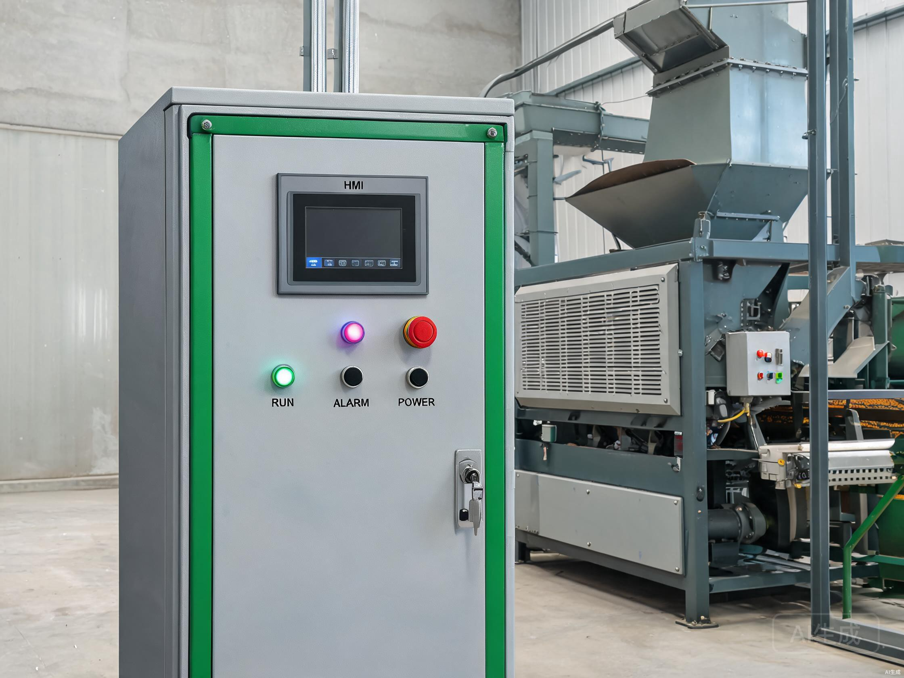

Large-Scale Soy
& Maize Solution
Extensive commercial farming demands high-volume continuous processing. The G-CT-300 continuous drying tower runs 24/7 unattended with indirect heat exchange — keeping flue gas completely separate from grain to meet export quality standards for international trade.
Scale, Quality, and Non-Stop Operation
South America's commercial farms produce thousands of tons per day during harvest — requiring continuous drying that meets export quality standards without interruption.
Harvest Volume That Overwhelms Batch Systems
Brazilian and Argentine commercial farms harvest 1,000+ tons of soybean and maize per day during peak season. Batch dryers simply cannot keep pace. Only continuous-flow drying towers with 200+ TPD capacity can match combine harvester throughput without creating bottlenecks that delay harvest.
When drying cannot keep up, grain accumulates in trucks and temporary field storage — exposed to weather, pests, and quality degradation. Every hour of delay risks moisture reabsorption and reduces commercial value. The drying system must run continuously, day and night, throughout the harvest window.
Export Quality Demands Indirect Heat
Grain destined for international export must meet strict quality standards. Direct-heat dryers risk smoke contamination and uneven moisture, leading to rejected shipments. The G-CT-300 uses indirect heat exchange — flue gas never contacts grain — ensuring export-grade quality with uniform moisture distribution.
European, Chinese, and Japanese import markets enforce tight tolerances on moisture uniformity, foreign odors, and smoke residues. A single rejected shipment can erase a season's profit margin. Indirect heat eliminates the contamination risk at its source.
Engineered for Export-Grade Volume
Three core components configured specifically for South American large-scale commercial grain drying: continuous tower, indirect heat furnace, and full PLC automation.



The Drying Process
From harvest truck to export-ready grain in five continuous automated steps.
What This Solution Delivers
Quantified impact for commercial farms, exporters, and grain traders in South America.
Solution Technical Specs
Full configuration details for the G-CT-300 continuous tower + indirect heat furnace + PLC automation package.
Common Questions
Does the system meet international export standards?
Can it run on fuels other than natural gas?
How often does the heat exchanger need cleaning?
What level of automation is included?
How long does installation take?
What warranty is included?
Scaling your operation?
Tell us your daily harvest volume, grain types, and fuel availability — we'll engineer a continuous drying solution.